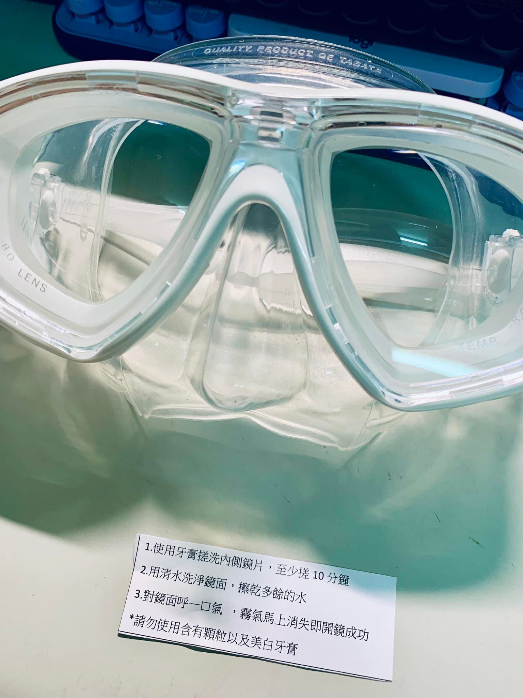

2025年4月21日

週間下班後沒時間去游泳，是一個缺憾。
總是希望快點把課堂上教練教的動作練習到像呼吸一樣不用大腦思考地那麼熟練，也希望能快點再去水中感受自己的肌肉和身體的感覺，把姿勢調整到最有效率的狀態，另外耐受性也需要時間養成。
很希望下次上課之前，已經把前一堂的菜單練好。因此週間找不到時間到泳池，讓我感到有點不安。就算週休二日規劃好會去練習，還是怕這樣不夠。可是擔心也沒有辦法，那樣並不能改變什麼。因此決定找些陸地上的鍛鍊方式，讓我轉移注意力。
第一個想到的是伸展，讓坐了一整天姿勢歪七扭八又僵硬的身體在安靜的夜晚得到舒展，讓身體恢復柔軟。另外今天也想來把玩潛水的工具，也就是，把週六剛買回來的面鏡進行開鏡～
人生第一次面鏡開鏡，值得紀錄下來😊
［開鏡儀式］：
1. 使用牙膏搓洗內側鏡片，至少搓10分鐘。
2. 用清水洗淨鏡面，擦乾多餘的水。
3. 對鏡面呼一口氣，霧氣馬上消失即開鏡成功🏅
p.s. 請勿使用含有顆粒以及美白牙膏
← 回到首頁0 views